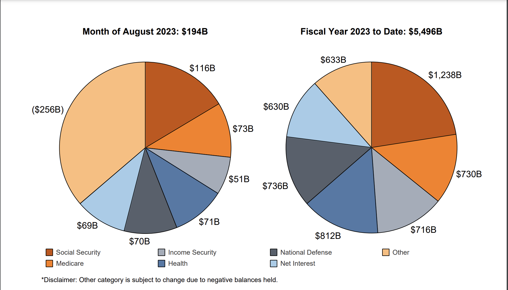
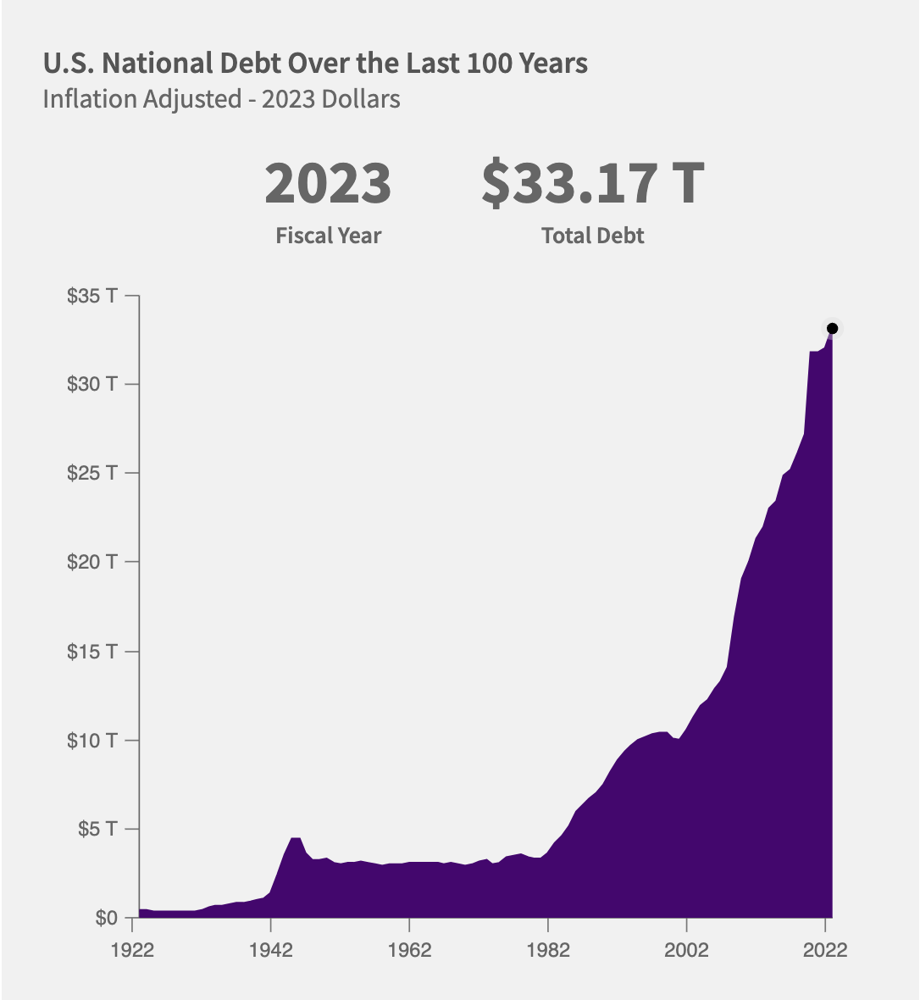

Few months back I read a few articles discussing the US debt ceiling and how reports suggested that if Congress did not raise the debt ceiling, it could lead to an economic calamity. At the time, I didn't delve into it and moved on to other aspects of my life.
Recently, I started reading a book - Principles for Dealing with The Changing World Order by Ray Dalio which helped me in having an understanding of this entire situation. Thanks to Puneet Singh who gifted me this book.
This is what my understanding is of the entire situation. The least I can say is that the situation is indeed scary.
Imagine yourself in a job where your monthly income is Rs. 50,000. Things have been going well, and you've even received a raise. You've managed to save money and invest in mutual funds. Then, someone suggests that, given your success, you should buy a home by taking a home loan. This way, you not only gain an asset in the form of a home, but you can also enhance your affordability. You think, "Yes, that's a smart way to increase my wealth." So, you start looking for homes, find one worth Rs. 20 lakhs, and decide to take a home loan of Rs. 15 lakhs, considering you have Rs. 5 lakhs in savings. In essence, you take on debt.
Debt, or credit, serves as a lever central banks employ to stimulate growth. Imagine if no bank was willing to grant you a home loan, would you be in a position to buy a home? The answer would likely be no. Nations, like individuals, require capital to grow and expand quickly. To serve their capital needs the nations also borrow money.
How does the US borrow money, and who provides it?
The US National Treasury manages the nation's debt. They borrow money from the public by
issuing Treasury Bonds (T-bonds). Public debt is held by individual investors,
institutions, and foreign governments.
So, why do foreign governments hold US Treasury Bonds?
Given that much of global trade happens in US
dollars, foreign central banks need to maintain US dollars as part of their foreign
exchange reserves. You can find a list of countries that have invested in US Treasury
bonds here
Returning to our analogy, imagine that after buying a home, which is an asset, you purchase another home, a car, and an iPhone—all financed by debt. Your salary has increased, and you've received promotions, but your monthly expenses now amount to Rs. 200,000, even though your income is Rs.125,000. Now you're in trouble. Your debt-to-income ratio is 160%, and a significant portion of your expenses goes toward servicing loans, i.e paying interest on those loans. This expense doesn't generate any assets. It doesn't give you a home or dividends.
Debt to GDP ration and Loan servicing
A similar issue is occurring with the US. The US has accumulated around $33 trillion in debt,
resulting in a debt-to-GDP ratio of approximately 122%. According to the US Treasury
Statement, it paid $69 billion in interest payments in August 2023 (Source - US
Treasury Department) and $630 billion in fiscal year 2023 to date, which constitutes
around 11% of its overall expenses.

Source: US
Treasury Department
How did the US land in this situation?
As I mentioned earlier, to ensure some level of growth, debt is essential. Every entity
relies on some form of debt but since the last 3-4 years, US debt has increased a lot. A
lot of this happened because of COVID. In response to the economic challenges posed by
the pandemic, the U.S. government implemented several relief measures, including
stimulus payments which required additional capital. The US government borrowed money
by issuing more Treasury Bonds.

Source: fiscaldata.treasury.gov
But why is this problematic? Why can't the US print more dollars?
Being a global reserve currency offers significant advantages. Every nation desires the currency of your country. The US can print more dollars to service its debt, However, this approach leads to an excess of unproductive currency, as it doesn't generate goods or services. Furthermore, excessive printing of dollars can devalue the US currency and this will do a lot of damage to the creditworthiness of the US. If a country, much like an individual, cannot manage its debt, its creditworthiness declines.
So, why was there an outcry over the Debt Ceiling?
The US has a concept known as the Debt Ceiling, which restricts the government's borrowing to a certain limit. Once this limit is reached, the government must either default or raise the debt ceiling. Many governments have raised the debt ceiling in the past. Raising the debt ceiling is more political thatn economical.
As you might guess, increasing the debt ceiling is not the right way to manage debt. As with individuals, nations should reduce the unnecessary expenses to manage and reduce debt to avoid defaults.
P.S - This is based on my limited understanding of things.